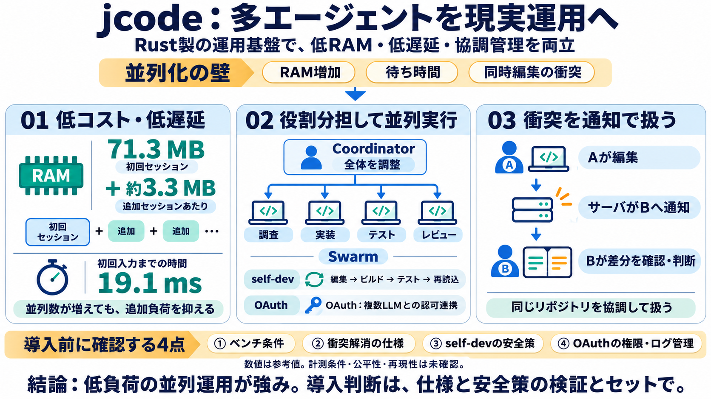

jcode Rust Agent Harness — Swarm & Memory 2026 | explainx.ai Blog | explainx.ai
table · 3 cols | Tool | Time | vs jcode | --- | jcode | 14.0 ms | baseline | | pi | 590.7 ms | 42.2× slower | | Codex…

table · 3 cols | Tool | Time | vs jcode | --- | jcode | 14.0 ms | baseline | | pi | 590.7 ms | 42.2× slower | | Codex…
jcode is gaining traction as a RAM-efficient alternative to Claude Code / Codex / OpenCode (its benchmark claims ~6× low…
, or run two terminals and pray that they didn’t both edit `users.go` at the same minute. Last Thursday I ran into `jcod…
🚀 jcode is a new open-source AI coding agent harness written fully in Rust. ⚡ It is extremely lightweight, using only ar…
But the competitive picture is shifting underneath that lead. OpenAI has made Codex CLI fully open-source under a permis…